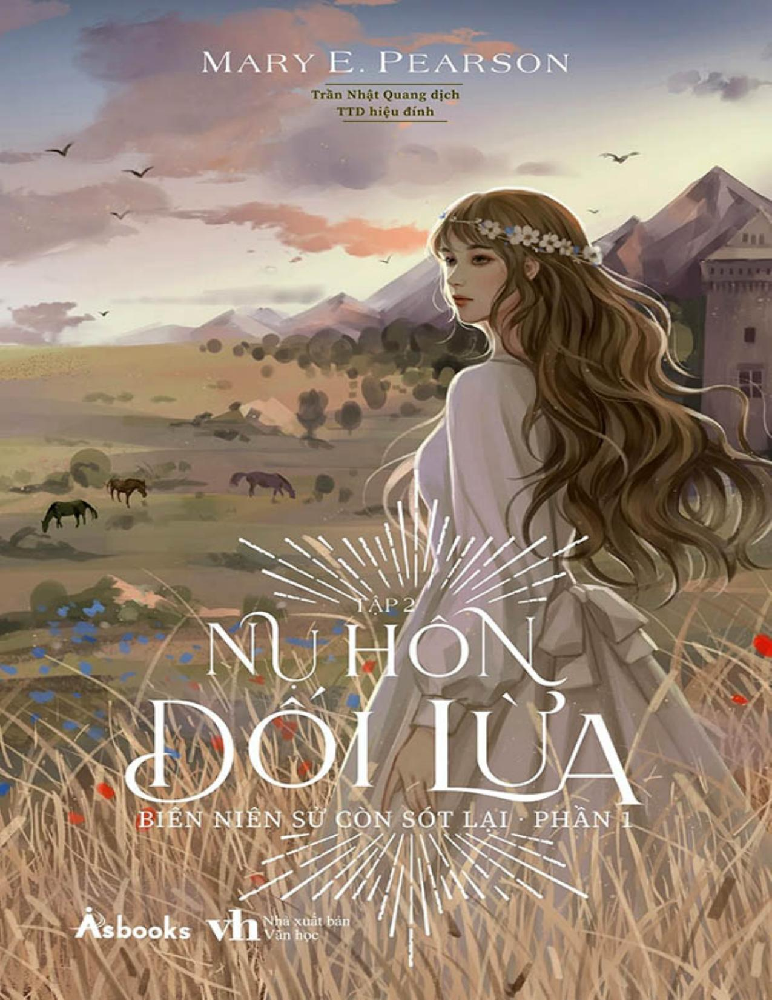

Tập 2

Mary E. Pearson là một tác giả danh tiếng, viết toàn thời gian tại một văn phòng ở California, nơi cô đang sống cùng chồng.
Cô có nhiều đầu sách bán chạy trên New York Times , và một số tác phẩm đã dựng thành phim ăn khách. Trong đó tiêu biểu là bộ truyện Biên niên sử còn sót lại : The Kiss of Deception (Nụ hôn dối lừa), The Heart of Betrayal và The Beauty of Darkness.
Các giải thưởng và danh hiệu cô đã nhận được: Giải Cánh điều vàng, Top 10 Lựa chọn dành cho thanh thiếu niên của YALSA, Sách hay nhất của ALA dành cho giới trẻ, Giải thưởng danh dự của Andre Norton, Giải thưởng sách dành cho giới trẻ ở Nam Carolina và Arkansas, Sách hay nhất dành cho thanh thiếu niên của VOYA,...

“Trong Nụ hôn dối lừa, một thế giới mới được dựng lên ngoạn mục bằng ngòi bút lão luyện, bao gồm âm mưu của những kẻ nắm quyền, các liên minh chính trị và các quốc gia thù địch. Những người hâm mộ loạt phim Game of Thrones sẽ say mê đọc và đắm chìm vào thế giới loạn lạc vượt thời gian này.” – VOYA
“Bí ẩn, lãng mạn, phản bội, chuộc lỗi: Có quá nhiều điều lôi cuốn độc giả vào phần này của câu chuyện, và khiến họ mất kiên nhẫn để chờ các phần tiếp theo.” – Chicago Tribune
“Áng văn đẹp như vẽ, tình tiết hồi hộp nghẹt thở, nàng công chúa táo bạo và câu chuyện tình lãng mạn này sẽ khiến bạn ngây ngất. Đây chắc chắn là một trong những cuốn sách yêu thích nhất của tôi trong năm nay.” – Alyson Noel
Bên kia ranh giới chết chóc,
Qua dãy núi vĩ đại,
Nơi cơn đói nuốt chửng linh hồn,
Nước mắt sẽ còn rơi.
– Bài hát của Venda